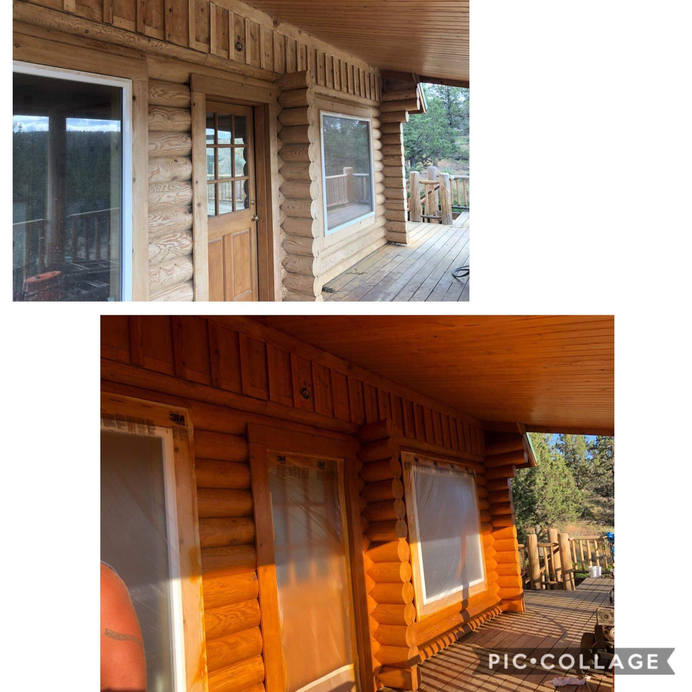

Meet INS Log Home Care LCC.
INS Log Home Care LCC. is a family company that prides themselves on quality work. We work within your schedule and get the job done. We understand that your homes are important to you, so we treat them with the upmost care in order to keep it that way.
The complete refinishing precess takes about two weeks to complete(subjective to the weather), but a log wash alone takes a few hours. With each project you get the gaurentee that we will continue working until you're content with the project. A home needs to be somewhere you want to be, so we want to make sure that the house we refinsih brings that sense of comfort that only a home can.